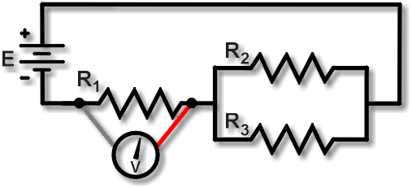
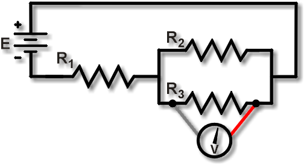

Measuring Voltage in Series-Parallel Circuits
|
 |
|
 |

Measuring voltage drops across resistances in series-parallel circuits requires an understanding of both series and parallel circuit behavior.
Figure 1 shows a measurement of the voltage drop across R1. When set to read voltage, the DMM will read the voltage VR1. Compare that with Figure 2: a measurement of the voltage drop across R3, that is, VR3.
Since R2 and R3 are connected in parallel, here the measurement across R3 will be the same as measuring across R2. Thus, a measurement across all the resistors would yield VTOT:
VTOT = VR1 + VR3 or VTOT = VR1 + VR2
Notice that the circuit is active when making voltage measurements. No leads or wires are lifted, else the circuit behavior would most likely be affected, resulting in incorrect measurements.